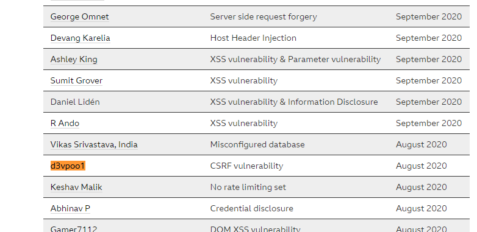

This vulnerability allows the user to setup the city of different user when the victims click the link. After analyzing the request I noticed that the CSRF token is absent thus testing it with a CSRF Attack can be possible. After generating a Proof of Concept code, I send it with my second user and change its city. After proving that the endpoint is vulnerable, I send a report on BBC and send it, after sometime they add me to acknowledgement and they also sent a swag.
